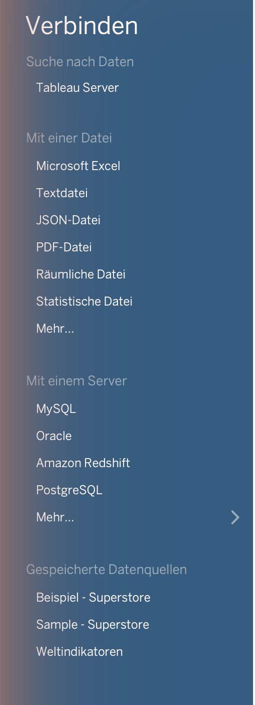
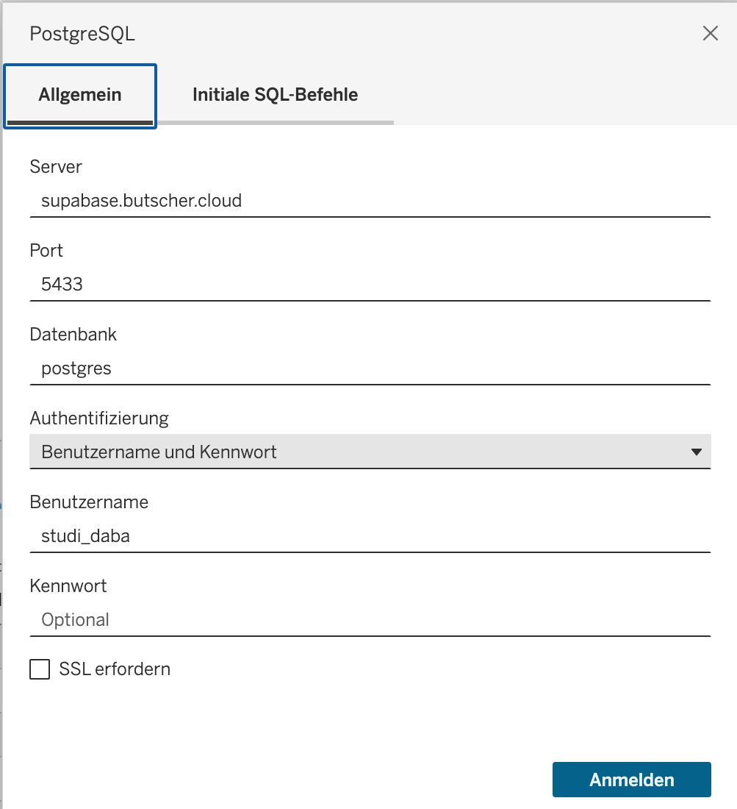
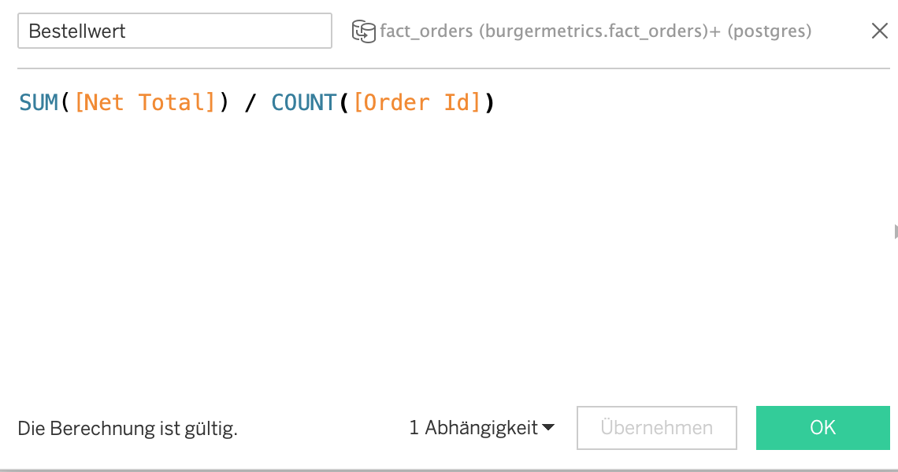

Was Tableau hier leistet — und was gleich bleibt
Power BI (Lab 04), das Dashboard, die Notebooks und die Dash-App der Fallstudie lesen ihre Kennzahlen aus den Sichten v_* des Schemas burgermetrics — jede Kennzahl genau einmal definiert (Lab 01, „Sichten als Vertrag“). Tableau Desktop ist ein weiterer Leser derselben Datenbank, mit einer anderen Arbeitsweise: Power BI verlangt erst ein Modell mit Beziehungen und Measures und setzt dann Bilder darauf; in Tableau ziehen Sie ein Feld auf ein Shelf, und in demselben Augenblick ist eine Abfrage formuliert und ihr Ergebnis gezeichnet. Das Arbeitsblatt ist die Abfrage.
Was gleich bleibt, ist das Ergebnis. Umsatz ist die Summe von net_total, dem Bestellwert nach Rabatt (Lab 03), und v_kennzahlen_jahr liefert dafür 2.994.771,13 € für 2025 aus 136.557 Bestellungen. Ein Blatt in Tableau, das eine andere Zahl zeigt, ist ein Fehler — eine fehlende Beziehung, ein falsches Aggregat, eine Kennung, die summiert wurde. Die Checkliste dieses Labs endet deshalb mit derselben Kontrollzahl wie die in Lab 04.
Werkzeug und Stand. Dieses Lab bezieht sich auf Tableau Desktop 2026.2, erschienen am 27.08.2026. Klickwege, Meldungen und Bildschirmfotos sind am 19.09.2026 mit Tableau Desktop 2026.2 auf macOS in deutscher Oberfläche gegen die Datenbank der Fallstudie geprüft; die englischen Begriffe des Labs stehen in dieser Oberfläche als Spalten (Columns), Zeilen (Rows), Markierungen (Marks card), Filter (Filters) und Datenquelle (Data Source). Preis und Lizenzbedingungen sind nach Herstellerangabe zu prüfen; die Studentenlizenz für Tableau Desktop und Tableau Prep ist seit 01.02.2025 eingestellt (Stand 09/2026). Kostenlos ist die Tableau Desktop Public Edition — sie kennt keine Datenbankverbindung, dafür den Weg über die CSV-Dateien aus notebooks/export/ (Abschnitt „Verbinden“); dieser Weg ist mit dem Textdatei-Connector von Tableau Desktop geprüft, in der Public Edition selbst nicht. Der Bestand der Fallstudie ist synthetisch, und das Konto studi_daba liest nur.
Hinweis. Bei den hier gezeigten Werkzeugen handelt es sich um eine Auswahl — sie ist weder als Empfehlung noch als Werbung zu verstehen. Tableau steht neben Power BI (Lab 04) und Python (Lab 06): drei Wege zu denselben Sichten, und die Kontrollzahl muss in jedem dieselbe sein.
Die Begriffe
| Begriff | Was es ist | Wo |
|---|---|---|
| Dimension · Measure | Dimensionen gruppieren: Branch Name, Date, Order Channel. Measures werden aggregiert: Net Total, Stars. Tableau ordnet Zahlenspalten den Measures zu, mit einer Ausnahme: Spalten, deren Name auf Id endet — order_id, branch_id, customer_id —, werden Dimensionen. hour, item_count und satisfaction_score stehen dagegen unter den Measures, eine Stunde eingeschlossen, die man gruppiert und nicht summiert; die Rolle eines Feldes lässt sich im Kontextmenü ändern („In Dimension konvertieren“). Tableau zeigt Spaltennamen mit Großbuchstaben und Leerzeichen: aus net_total wird Net Total, aus branch_name wird Branch Name. |
Data pane links im Blatt: Dimensionen über der Trennlinie, Measures darunter |
| Diskret (blau) · Stetig (grün) | Diskret erzeugt Köpfe — eine Überschrift je Wert —, stetig erzeugt eine Achse. Die Farbe der Pill sagt diskret oder stetig, nicht Dimension oder Measure: Branch Name ist blau und ergibt einen Kopf je Filiale, also Balken; MONTH(Date) als stetiges Datum ist grün und ergibt eine Zeitachse, also eine Linie. Eine Kennzahl kommt mit ihrer Aggregation auf das Shelf, SUM(Net Total), grün. |
Pill-Farbe auf Columns und Rows |
| Live · Extract | Live schickt jede Änderung im Blatt als Abfrage an PostgreSQL — aktuell, aber jede Verbindung zählt gegen die zwanzig Sitzungen der Rolle (Lab 01). Extract kopiert einen Auszug in eine .hyper-Datei: schneller, offline, mit Funktionen, die die Quelle nicht hat — und ein Stand, der ab dem Schreiben veraltet. Der Vorgänger .tde ist seit März 2023 abgekündigt (Stand 09/2026). |
Data-Source-Seite, Schalter Live / Extract |
| Level of Detail (LOD) | Ein Ausdruck, der die Ebene der Aggregation selbst nennt, statt sie vom Blatt zu übernehmen: { FIXED [Branch Name] : SUM([Net Total]) } ist der Umsatz je Filiale, auch wenn das Blatt zusätzlich nach Monat gruppiert; die Formel legt die Ebene fest, das Blatt zeigt sie mit Branch Name. |
Calculated Field (Abschnitt „Berechnen“) |
Zwei Fragen an jede Pill, unabhängig voneinander: Gruppiert sie oder wird sie aggregiert — Dimension oder Measure? Erzeugt sie Köpfe oder eine Achse — diskret (blau) oder stetig (grün)? Ein Datum kann grün sein, eine Kennzahl blau. Der Simulator dieses Labs vereinfacht das: Dimensionen sind dort blau, Kennzahlen grün, und die geordneten Dimensionen Monat und Stunde ergeben die Linie, die in Tableau eine grüne Datums-Pill ergibt.
Verbinden
Der Weg zur Datenbank beginnt auf der Startseite mit Connect → To a Server → PostgreSQL — in der deutschen Oberfläche Verbinden → Mit einem Server → PostgreSQL. Der Dialog fragt nach Server supabase.butscher.cloud, Port 5433, Datenbank postgres, Authentifizierung „Benutzername und Kennwort“, Benutzername studi_daba und Kennwort thws — die fünf Angaben aus Lab 01, jede in einem eigenen Feld. „SSL erfordern“ bleibt aus; die Verbindung läuft wie in Lab 01 ohne SSL. Der zweite Reiter des Dialogs, „Initiale SQL-Befehle“, nimmt das Initial SQL aus dem Abschnitt „Berechnen“ auf. Anders als Power BI bringt Tableau den Treiber für PostgreSQL nicht mit: Fehlt er, verweist der Dialog auf die Download-Seite des Herstellers; nach der Installation gelingt der zweite Versuch (Stand 09/2026).


thws.Bildschirmfotos vom 19.09.2026, Tableau Desktop 2026.2 auf macOS, deutsche Oberfläche — zum Vergrößern anklicken.
Nach der Anmeldung öffnet sich die Data-Source-Seite (Datenquelle): links die Verbindung und die Tabellenliste, in der Mitte die Leinwand, oben rechts der Schalter Live oder Extract. Eine Schemaauswahl gibt es nicht: Die Liste führt jede Tabelle der Datenbank postgres aus allen Schemata in der Schreibweise tabelle (schema.tabelle), Tabellen aus public ohne Zusatz — auch solche, die die Rolle nicht lesen darf. burgermetrics im Suchfeld über der Liste lässt die 14 Tabellen und 38 Sichten des Auswertungsmodells übrig. Für das Dashboard dieses Labs genügen zwei davon: fact_orders mit dem Bestellwert net_total und dem Datum, dim_branch mit dem Filialnamen. Beide kommen auf die Leinwand; beim Ablegen der zweiten Tabelle schlägt Tableau die Beziehung Branch Id = Branch Id (Dim Branch) selbst vor — die Verbindung über branch_id, die Power BI aus dem Fremdschlüssel übernommen hat (Lab 04). Fehlt sie, zeigt jedes Blatt in jeder Filiale den Gesamtumsatz (Abschnitt „Stolpersteine“).
Bildschirmfoto vom 19.09.2026, Tableau Desktop 2026.2 auf macOS, deutsche Oberfläche — zum Vergrößern anklicken.
- 1Die Verbindung: Server und Datenbank aus dem Dialog. Die Rolle
studi_dabaliestwawiundburgermetrics; für dieses Dashboard braucht es nurburgermetrics. - 2Das Suchfeld über der Tabellenliste mit
burgermetrics. Ohne Suchbegriff steht jede Tabelle der Datenbank in der Liste, aus allen Schemata, in der Schreibweisetabelle (schema.tabelle); das Suchfeld ersetzt die Schemaauswahl, die dieser Connector nicht hat. - 3Live oder Extrakt (Extract). Nach dem Umschalten auf Extrakt und dem Wechsel auf ein Blatt fragt Tableau nach dem Speicherort der
.hyper-Datei — Vorgabe ist der Ordner Datenquellen im Tableau-Repository — und liest die 754.513 Zeilen vonfact_orderseinmal: hier in unter einer Minute, 14,3 MB, ohne Fehlermeldung. Für den Kurs ist Extract die Wahl: Die Rolle hält zwanzig Sitzungen. - 4Die Beziehung
fact_orders—dim_branchüberBranch Id, von Tableau beim Ablegen der zweiten Tabelle vorgeschlagen. Sie ist die Voraussetzung dafür, dassBranch Nameden Umsatz aufteilt — ohne sie steht in jeder Filiale die Gesamtsumme. - 5Die Vorschau mit den Typsymbolen:
#ist Zahl,Abcist Text, das Kalendersymbol ein Datum. Tableau schreibtorder_idalsOrder Idundnet_totalalsNet Total— so heißen die Felder in den Formeln des Abschnitts „Berechnen“. Die Spaltetime, eine Uhrzeit ohne Datum, zeigt Tableau mit dem Platzhalterdatum 30.12.1899.
Die Entscheidung Live oder Extract fällt auf dieser Seite. Live ist für einen Hörsaal die ungünstigere Wahl: Jede Änderung im Blatt löst eine Abfrage aus, und die Rolle hält zwanzig Sitzungen. Ein Extract fragt die Datenbank einmal, schreibt den Auszug als .hyper-Datei und rechnet danach ohne Verbindung — fact_orders mit 754.513 Zeilen und die 38 Sichten v_* belasten die Datenbank dann einmal statt bei jedem Ziehen. Neue Daten kommen erst mit dem nächsten Extract.
Die Tableau Desktop Public Edition kennt keine Datenbank: Sie liest Dateien (Excel, Text, statistische Dateien), Google Drive und OData, höchstens 15 Mio. Zeilen je Arbeitsmappe (Stand 09/2026). Ihr Weg zu den Daten der Fallstudie führt über den Export aus Notebook 00 (00_zugang_und_daten.ipynb, Lab 02): vier Sichten als CSV und Parquet unter notebooks/export/. Für das Dashboard dieses Labs genügen v_umsatz_monat.csv — 109 Monate von März 2017 bis März 2026 — und v_filiale.csv mit acht Filialen; die Public Edition erzeugt aus den Dateien ihren Extract. Die Studentenlizenz für Tableau Desktop und Tableau Prep ist seit 01.02.2025 eingestellt (Stand 09/2026); wer keine Lizenz für Tableau Desktop hat, arbeitet mit der Public Edition und den CSV-Dateien.
Das Shelf
Das Arbeitsblatt hat links das Data pane (Daten) mit den Feldern als Pills und in der Mitte die Shelves: Columns und Rows (Spalten, Zeilen) bestimmen die Achsen, Filters (Filter) schränkt die Zeilen ein, die Marks card (Markierungen) legt die Markenart fest und kodiert Farbe, Größe und Beschriftung. Ein Feld auf einem Shelf ist eine Abfrage: Branch Name auf Columns gruppiert, SUM(Net Total) auf Rows aggregiert — sinngemäß SELECT branch_name, SUM(net_total) … GROUP BY branch_name, gezeichnet als Balken.
Bildschirmfoto vom 19.09.2026, Tableau Desktop 2026.2 auf macOS, deutsche Oberfläche — zum Vergrößern anklicken.
- 1Data pane (Daten), nach Tabellen gegliedert: Dimensionen über der Trennlinie, Measures darunter;
=#markiert ein Calculated Field. Das FIXED-FeldUmsatz je Filiale (FIXED)steht unterdim_branch, weil seine EbeneBranch Namedort liegt. - 2
Bestellwert, das Calculated Field aus dem Abschnitt „Berechnen“, am Ende des Data pane. Darüber die Felder vonfact_orders:Order Id,Branch IdundCustomer Idhat Tableau an der EndungIdals Kennungen erkannt und zu Dimensionen gemacht;Hour,Item CountundSatisfaction Scorestehen unter den Measures.Hourauf ein Shelf gezogen hießeSUM(Hour), die Summe der Uhrzeiten — für die Stunde „In Dimension konvertieren“. Bestellungen zähltCOUNT(Order Id)oder das Feldfact_orders (Anzahl), das Tableau selbst anlegt. - 3
Filters(Filter):JAHR(Date): 2025. Gesetzt im Blatt „Umsatz je Filiale“ und über „Auf Arbeitsblätter anwenden → Alle, die diese Datenquelle verwenden“ auf dieses Blatt ausgedehnt — so steuert ihn später das Dashboard für beide Blätter. Ohne den Filter zeigt die Linie alle 109 Monate. - 4
MONAT(Date)als stetiges Datum, grün: eine durchgehende Zeitachse. Die Pill kommt alsJAHR(Date)an; ihr Kontextmenü bietet Monat zweimal — in der ersten Gruppe diskret („Mai“), in der zweiten stetig („Mai 2015“). Die zweite ergibt die Linie; die erste stellte zwölf Köpfe nebeneinander, und die Monate aller Jahre fielen in denselben Kopf. - 5Die Kennzahl mit ihrer Aggregation im Namen:
SUM(Net Total). Die Aggregation gehört zur Pill, nicht zum Feld — dasselbe Feld kann auf einem anderen Shelf als AVG liegen. - 6Marks card (Markierungen): Markenart „Automatisch“, aus der stetigen Achse als Linie gewählt; darunter Farbe, Größe, Beschriftung, Detail, QuickInfo und Pfad. Die Statusleiste unten nennt 12 Markierungen und
SUM(Net Total): 2.994.771.
Die Regel
Dimension auf Columns und Measure auf Rows ergeben senkrechte Balken; Dimension auf Rows und Measure auf Columns ergeben waagerechte — für acht Filialnamen die besser lesbare Form. Eine geordnete Dimension — ein Datum als stetiges Feld, grün — ergibt eine Achse und damit eine Linie: MONTH(Date) auf Columns und SUM(Net Total) auf Rows ist der Umsatz im Zeitverlauf. Fehlt die Kennzahl, entsteht eine Tabelle: Köpfe ohne Achse. Das Diagramm wählen Sie nicht; es folgt aus den Shelves.
Eine Kennzahl kommt nie ohne Aggregation auf ein Shelf: Tableau hängt ihr SUM an, und die Pill heißt SUM(Net Total). Die Aggregation gehört zur Pill und lässt sich dort umstellen — AVG(Stars) für den Mittelwert der Sterne, COUNT(Order Id) für die Zahl der Bestellungen. Für Kennungen gilt dieselbe Regel wie in Lab 04: zählen, nicht summieren.
Berechnen
Was die Sicht nicht fertig liefert, rechnet Tableau als Calculated Field — mit derselben Vorsicht wie bei den Measures in Lab 04: Die Definition der Kennzahl bleibt in der Sicht, das Feld bildet sie nach und erfindet sie nicht neu.
SUM([Net Total]) / COUNT([Order Id]): Zähler und Nenner sind aggregiert, Tableau rechnet das Verhältnis je Zelle des Blatts — je Filiale, je Monat, für 2025 gesamt 21,93 € aus 2.994.771,13 € und 136.557 Bestellungen. Dieselbe Kennzahl heißt in v_kennzahlen_jahr aov. Der Dialog meldet unten links „Die Berechnung ist gültig.“; eine Formel, die Aggregat und Zeile mischt — SUM([Net Total]) / [Order Id] —, meldet „Die Berechnung enthält Fehler.“ und auf Klick den Grund: „Für diese Funktion können keine Aggregatargumente und Nicht-Aggregatargumente gemischt werden.“
AVG([Stars]): Sterne sind ein Wert je Rezension, keine Summe. Das Feld liest fact_reviews, die dritte Faktentabelle an denselben Dimensionen (Lab 03); je Filiale und Jahr aufgeteilt läuft es über dim_branch und das Datum der Rezension. Im Simulator gilt dasselbe für die Zufriedenheit: AVG, nicht SUM.
{ FIXED [Branch Name] : SUM([Net Total]) } nennt die Ebene selbst: die Summe je Filiale, auch wenn das Blatt zusätzlich nach Monat oder Kanal gruppiert. In einem Blatt nach Filiale und Monat steht neben jedem Monat die Summe seiner Filiale. Die Filialsummen zeigt das Blatt nur, wenn Branch Name darin liegt — ohne die Filiale im Blatt fasst Tableau die FIXED-Werte wieder zusammen, und es steht der Gesamtwert da. Ein gewöhnlicher Filter auf dem Blatt ändert den FIXED-Wert nicht; ein Datenquellenfilter schon. Im Data pane ordnet Tableau das Feld unter dim_branch ein — der Tabelle seiner Ebene.

Bestellwert: Name oben links, die Formel darunter, die Prüfung unten links. Erreichbar über das Menü ▾ neben dem Suchfeld des Data pane („Berechnetes Feld erstellen…“) oder das Menü Analyse.Der Verbindungsdialog hat einen zweiten Reiter, „Initiale SQL-Befehle“ (Initial SQL): Anweisungen, die Tableau beim Verbinden ausführt — nachträglich erreichbar über das Kontextmenü der Verbindung auf der Data-Source-Seite. Der Suchpfad der Rolle lautet wawi, burgermetrics (Lab 01); die Anweisung stellt burgermetrics nach vorn. Auf die Tabellenliste wirkt sie nicht — die führt ohnehin jede Tabelle mit ihrem Schema —, wohl aber auf eigene Abfragen unter „Neue benutzerdefinierte SQL“: SELECT * FROM v_umsatz_monat findet die Sicht dann ohne Präfix, und bei v_rezension_produkt, die in beiden Schemata existiert, gewinnt burgermetrics:
SET verändert keine Daten und läuft in der nur lesenden Transaktion der Rolle; das Protokoll von Tableau führt die Anweisung als InitialSQL mit dem Ergebnis ok. Eine schreibende Anweisung an dieser Stelle — etwa eine Hilfstabelle anlegen — endet mit cannot execute CREATE TABLE in a read-only transaction (Abschnitt „Stolpersteine“).
Das Dashboard
Ein Blatt beantwortet eine Frage; ein Dashboard stellt zwei Antworten nebeneinander und lässt einen Filter auf beide wirken. Das Dashboard dieses Labs besteht aus zwei Blättern, einem Filter und einem Titel:
| Baustein | Shelves | Ergebnis |
|---|---|---|
| Blatt 1 „Umsatz je Monat“ | MONTH(Date) stetig auf Columns, SUM(Net Total) auf Rows | eine Linie: ohne Filter 109 Monate von März 2017 bis März 2026, mit dem Jahr 2025 zwölf Punkte |
| Blatt 2 „Umsatz je Filiale“ | Branch Name auf Rows, SUM(Net Total) auf Columns, absteigend sortiert | acht waagerechte Balken, BM Europastern vorn |
| Dashboard | beide Blätter; der Filter auf YEAR(Date) aus dem Blatt, über „Auf Arbeitsblätter anwenden → Alle, die diese Datenquelle verwenden“ für beide gültig und im Dashboard über das Menü des Blatts (Filter → Jahr von Date) eingeblendet | mit 2025: Die Balken summieren sich auf die Linie — 2.994.771,13 € |
| Titel | eine Aussage, keine Achsenbeschreibung | „BM Europastern erzielt 2025 den höchsten Umsatz“ statt „Umsatz nach Branch Name“ |
Bildschirmfoto vom 19.09.2026, Tableau Desktop 2026.2 auf macOS, deutsche Oberfläche — zum Vergrößern anklicken.
- 1Der Titel als Aussage, über „Dashboardtitel anzeigen“ unten links eingeblendet und mit Doppelklick bearbeitet: Er nennt das Jahr, die Summe und den Befund.
- 2Der Filter
Jahr von Date, eingeblendet über das Menü ▾ des Blatts „Umsatz je Filiale“ → Filter → Jahr von Date. Er steuert beide Blätter, weil der Filter im Blatt für alle Blätter dieser Datenquelle gilt; mit 2024 und 2025 wachsen Linie und Balken gemeinsam. - 3„Umsatz je Monat“: die Linie aus
MONAT(Date)undSUM(Net Total), zwölf Punkte für 2025, Spitze im Juli. - 4„Umsatz je Filiale“: acht waagerechte Balken, absteigend sortiert über das Sortiersymbol der Symbolleiste; die Achse beginnt bei null.
- 5Die Blätter der Arbeitsmappe, von hier auf die Fläche gezogen; das Blatt „Bestellwert“ zeigt als Text 21,93 — die Kontrolle für das Calculated Field.
In der Public Edition entstehen dieselben Blätter aus den CSV-Dateien: Blatt 1 aus v_umsatz_monat.csv mit Monat auf Columns und SUM(Umsatz) auf Rows, Blatt 2 aus v_filiale.csv mit branch_name auf Rows und SUM(umsatz_2025) auf Columns. Drei Dinge sind vorher zu prüfen — geprüft mit dem Textdatei-Connector von Tableau Desktop 2026.2 in deutscher Oberfläche, Abschnitt „Stolpersteine“: das Feldtrennzeichen (bei v_filiale.csv wählt Tableau den Unterstrich statt des Kommas), das Gebietsschema (mit „Deutsch (Deutschland)“ wird umsatz mit Dezimalpunkt zu Text Abc; erst „Englisch (Vereinigte Staaten)“ in den Textdatei-Eigenschaften liest eine Zahl) und der Typ von Monat (er kommt als Text Abc und wird mit „Datentyp ändern → Datum“ zum Ersten des Monats, 2017-03 → 01.03.2017; erst dann gibt es eine stetige Achse und einen Jahresfilter). Danach stimmt die Linie: 109 Monate, Summe 14.522.379, mit dem Jahr 2025 zwölf Punkte und 2.994.771. v_filiale.csv trägt kein Jahr, sondern die fertige Spalte umsatz_2025; der Jahresfilter wirkt dort auf Blatt 1, und die Kontrollzahl stimmt in beiden Blättern: 2.994.771,13 €.
Zwei Regeln aus dem Deck
Balken beginnen bei null. Ihre Länge kodiert den Wert; eine Achse, die erst bei einem hohen Betrag beginnt, macht aus einem kleinen Unterschied einen langen Balken.
Der Titel ist eine Aussage. „Umsatz nach Branch Name“ beschreibt die Achsen; „BM Europastern erzielt 2025 den höchsten Umsatz“ sagt, was das Bild zeigt. Der Filter gehört in den Titel — 2.994.771,13 € sind der Umsatz eines Jahres, nicht der aller Jahre.
Stolpersteine
Beim Verbinden prüft Tableau, ob es in der Datenbank temporäre Tabellen anlegen darf, und schickt dafür SELECT * INTO TEMPORARY TABLE "#Tableau_…_Connect_Check" FROM (SELECT 1 AS COL) AS CHECKTEMP, danach CREATE LOCAL TEMPORARY TABLE … ON COMMIT PRESERVE ROWS. Mit studi_daba antwortet PostgreSQL auf beides mit SQLSTATE 25006: ERROR: cannot execute SELECT INTO in a read-only transaction und ERROR: cannot execute CREATE TABLE in a read-only transaction. Tableau zeigt keine Meldung, merkt sich die fehlende Fähigkeit und arbeitet mit Unterabfragen weiter: Kontextfilter, Jahresfilter und der Extract mit 754.513 Zeilen liefen ohne Fehler. Sichtbar ist der Vorgang nur im Protokoll log.txt im Ordner Protokolle des Tableau-Repositorys (unter Dokumente), Kategorie TempTableCapability. Die zweite Schranke der Rolle — permission denied to create temporary tables in database "postgres", sobald eine Sitzung die Nur-Lese-Voreinstellung mit SET TRANSACTION READ WRITE abschaltet (Lab 01) — erreicht Tableau nicht, weil es die Voreinstellung nicht abschaltet. Geprüft am 19.09.2026 mit Tableau Desktop 2026.2 gegen PostgreSQL 17.6.
Die Tabellenliste der Data-Source-Seite kennt keine Schemaauswahl: Sie zeigt jede Tabelle der Datenbank postgres — auch aus Schemata, die die Rolle nicht lesen darf, weil der Katalog für jede Rolle sichtbar ist. Wer eine davon auf die Leinwand zieht, bekommt keine Meldung: Die Felder bleiben leer, die Vorschau sagt „Datenvorschau nicht verfügbar“, und im Protokoll steht ERROR: permission denied for schema … mit dem Namen des fremden Schemas. Abhilfe: burgermetrics in das Suchfeld über der Liste — übrig bleiben die 14 Tabellen und 38 Sichten des Auswertungsmodells, Schreibweise tabelle (burgermetrics.tabelle).
Der Textdatei-Connector rät Trennzeichen und Zahlenformat aus der Datei. Drei Befunde mit notebooks/export/ in deutscher Oberfläche (Tableau Desktop 2026.2): Bei v_filiale.csv wählt Tableau den Unterstrich als Feldtrennzeichen — 16 Felder namens Branch, Id,Branch, Name,District,Branch statt der 19 Spalten; in den Textdatei-Eigenschaften (Kontextmenü der Tabelle auf der Leinwand) auf „Komma“ stellen. Dezimalzahlen mit Punkt wie 5897.6 kommen als Text Abc an, weil das Gebietsschema „Deutsch (Deutschland)“ ein Komma erwartet; „Datentyp ändern → Zahl (dezimal)“ macht daraus NULL, erst das Gebietsschema „Englisch (Vereinigte Staaten)“ in denselben Eigenschaften liest die Zahl. Ein so umgestelltes Feld kann als Dimension stehen bleiben — dann im Kontextmenü „In Kennzahl konvertieren“. Monat (2017-03) bleibt in jedem Fall Text und wird erst mit „Datentyp ändern → Datum“ zum 01.03.2017.
Blatt 2 zeigt in jeder Filiale denselben Wert, den Gesamtumsatz. Dann sind fact_orders und dim_branch auf der Data-Source-Seite nicht verbunden: Branch Name kann die Bestellungen nicht aufteilen. Tableau meldet nichts; der Fehler ist nur im Blatt zu sehen. Abhilfe: zurück auf die Data-Source-Seite, die Verbindung über branch_id prüfen oder anlegen (Bildschirmfoto im Abschnitt „Verbinden“).
Branch Name liegt auf Rows, und das Blatt zeigt acht Köpfe untereinander mit leeren Zellen — eine Tabelle, kein Diagramm. Es fehlt die Kennzahl: Erst SUM(Net Total) auf Columns macht aus den Köpfen waagerechte Balken. Auch eine Kennzahl, die als diskrete (blaue) Pill neben der Dimension liegt, ergibt Köpfe — Zahlen als Überschriften statt einer Achse. Der Simulator verhält sich gleich: nur Dimensionen ergeben eine Tabelle.
Kennungen erkennt Tableau an der Endung Id: order_id, branch_id, customer_id stehen als Dimensionen im Data pane, eine Summe von Bestellnummern entsteht so nicht. Die übrigen ganzzahligen Spalten landen unter den Measures — Hour, Item Count, Satisfaction Score —, und Hour auf einem Shelf heißt SUM(Hour), die Summe der Uhrzeiten. Für die Stunde: „In Dimension konvertieren“; für Bestellungen zählen: COUNT(Order Id) oder das Feld fact_orders (Anzahl), das Tableau selbst anlegt. Im Simulator ist Bestell-ID eine Kennzahl: SUM ergibt 1.310.137.177, COUNT zählt 2.000 Bestellungen.
Jede Änderung in einem Blatt mit Live-Verbindung löst eine Abfrage aus, und die Rolle studi_daba hält höchstens zwanzig gleichzeitige Sitzungen (Lab 01). Ein Hörsaal voller Live-Verbindungen belegt sie in Minuten, und die nächste Anmeldung scheitert mit FATAL: too many connections for role "studi_daba". Ein Extract fragt die Datenbank einmal und rechnet danach lokal.
Bildschirmfoto vom 19.09.2026, Tableau Desktop 2026.2 auf macOS, deutsche Oberfläche — zum Vergrößern anklicken.
- 1Kontextmenü der Tabelle auf der Leinwand → „Textdatei-Eigenschaften…“: dort stehen Feldtrennzeichen („Andere“ mit
_statt „Komma“) und Gebietsschema. - 2„16 Felder 8 Zeilen“ —
v_filiale.csvhat 19 Spalten und acht Filialen: Tableau hat die Kopfzeile am Unterstrich getrennt. - 3Die Felder, alle vom Typ
Abc, mit Namen wieId,Branch: Die Kommas stehen im Feldnamen statt zwischen den Feldern, und die erste Spalte trägt die ganze Zeile.
Simulator
Der Simulator unten trägt die Beschriftung von Tableau: links das Data pane mit Dimensionen als blauen Pills (Abc, ein Kalendersymbol für die geordneten Felder Monat und Stunde) und Kennzahlen als grünen (#); rechts die Shelves Columns, Rows, Color und Filters — Color vertritt die Marks card. Drei Dinge unterscheiden ihn von Tableau Desktop. Felder werden in den Shelves ausgewählt statt gezogen. Kennzahlen kommen mit SUM auf das Shelf und tragen im Chip die Aggregation, die Sie umstellen: SUM, AVG, COUNT, MIN, MAX. Und das Diagramm folgt der Regel aus dem Abschnitt „Das Shelf“: Dimension auf Columns und Kennzahl auf Rows ergeben senkrechte Balken, umgekehrt waagerechte, eine geordnete Dimension eine Linie, Color Serien oder Stapel; nur Dimensionen, eine Kennzahl ohne Dimension oder Dimension und Kennzahl auf demselben Shelf ergeben im Simulator eine Tabelle.
Die Daten: 2.000 Bestellungen des Jahres 2025 aus obt_orders als flache Tabelle, wie in Lab 04.
| Feld | Art | Werte |
|---|---|---|
| Monat | Dimension, geordnet | 2025-01 bis 2025-12 — auf Columns entsteht eine Linie |
| Filiale | Dimension | die acht Filialen — auf Rows entstehen waagerechte Balken |
| Saison | Dimension | Spring, Summer, Autumn, Winter; Summer sind die Monate Juni bis August mit 580 Bestellungen |
| Bestell-ID | Kennzahl | die Bestellnummer — eine Kennung; SUM darüber ergibt 1.310.137.177, COUNT zählt 2.000 |
| Umsatz (€) | Kennzahl | Bestellwert nach Rabatt; Summe aller 2.000: 43.882,98 € |
| Zufriedenheit | Kennzahl | 2 bis 5, nur bei 451 bewerteten Bestellungen; AVG ignoriert die Lücken — im Sommer 126 bewertete Bestellungen |
Übungen
Fünf Übungen: zwei im Simulator — Umsatz je Monat als Linie, Zufriedenheit je Filiale im Sommer als waagerechte Balken mit AVG und Filter —, ein Quiz zu Live, Extract und Public Edition, eine Reihenfolge vom Connector zum Dashboard und eine Checkliste für das Dashboard in Tableau Desktop oder der Public Edition.
Zusammenfassung
- Tableau ist ein zweiter Leser derselben Sichten: Das Arbeitsblatt ist die Abfrage, und das Ergebnis muss dasselbe sein wie in Power BI (Lab 04), im Dashboard und in den Notebooks — 2.994.771,13 € Umsatz aus 136.557 Bestellungen für 2025.
- Dimensionen gruppieren, Measures werden aggregiert; blau heißt diskret (Köpfe), grün heißt stetig (Achse) — nicht Dimension oder Measure. Eine Kennzahl kommt mit ihrer Aggregation auf das Shelf:
SUM(Net Total),AVG(Stars),COUNT(Order Id). - Verbinden:
Connect → To a Server → PostgreSQL(Verbinden → Mit einem Server → PostgreSQL) mit Serversupabase.butscher.cloud, Port5433, Datenbankpostgres,studi_daba/thws, „SSL erfordern“ aus; der Connector braucht einen Treiber, Tableau verweist auf den Download. Die Tabellenliste kennt keine Schemaauswahl —burgermetricsim Suchfeld —, und Tableau schlägt die Beziehung überBranch Idselbst vor. Tableau Desktop 2026.2 vom 27.08.2026, geprüft am 19.09.2026. - Live schickt jede Änderung als Abfrage an die Datenbank, Extract kopiert einen Auszug in eine
.hyper-Datei — schneller, offline, mit Funktionen, die die Quelle nicht hat, und ein Stand. Die Public Edition kennt keine Datenbank: Dateien, Google Drive, OData, 15 Mio. Zeilen je Arbeitsmappe; ihr Weg sind die CSV-Dateien ausnotebooks/export/. Die Studentenlizenz ist seit 01.02.2025 eingestellt. - Die Regel des Shelfs: Dimension auf Columns und Measure auf Rows ergeben Balken, umgekehrt waagerechte, eine geordnete Dimension eine Linie; ohne Kennzahl entsteht eine Tabelle. Die Calculated Fields
Bestellwert,Ø Sterneund{ FIXED [Branch Name] : SUM([Net Total]) }bilden Sichten nach, ohne sie neu zu definieren;SET search_path TO burgermetrics, wawials Initial SQL stellt die Sichten in eigenen Abfragen ohne Präfix bereit. - Das Dashboard: zwei Blätter — Linie je Monat, Balken je Filiale —, ein Filter auf das Jahr, der über „Auf Arbeitsblätter anwenden“ für beide gilt, ein Titel als Aussage; Balken beginnen bei null. Kontrolle: 2.994.771,13 € und Bestellwert 21,93 € für 2025.
- Stolpersteine: Tableau prüft beim Verbinden, ob es temporäre Tabellen anlegen darf, und bekommt von der nur lesenden Rolle
cannot execute SELECT INTO in a read-only transaction— ohne Meldung im Fenster, Filter und Extract laufen trotzdem; alle Schemata in einer Tabellenliste (Suchfeld); CSV in deutscher Oberfläche (Trennzeichen, Gebietsschema,Monatals Datum); dieselbe Summe in jeder Filiale (Verbindung überbranch_idfehlt); Tabelle statt Balken (Kennzahl fehlt);SUM(Hour)(Kennungen mit EndungIderkennt Tableau selbst, andere Zahlenspalten werden Measures); zwanzig Sitzungen im Hörsaal. Lab 06 liest dieselben Sichten mit Python.